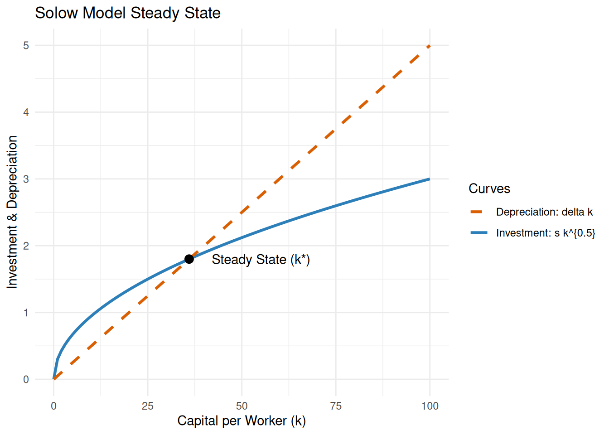
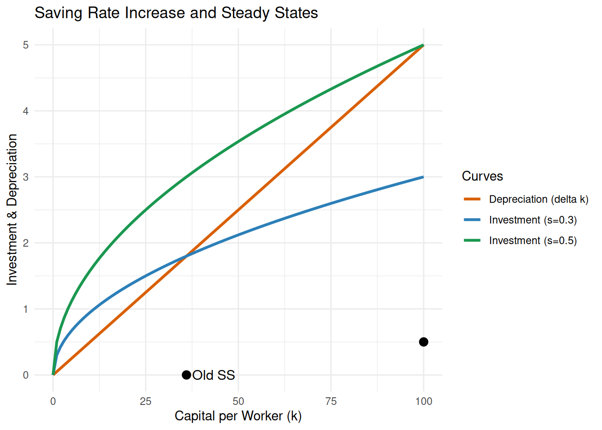
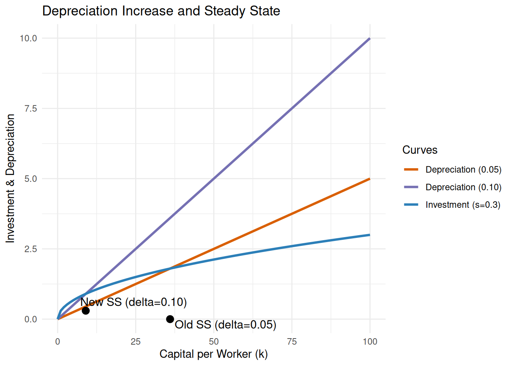
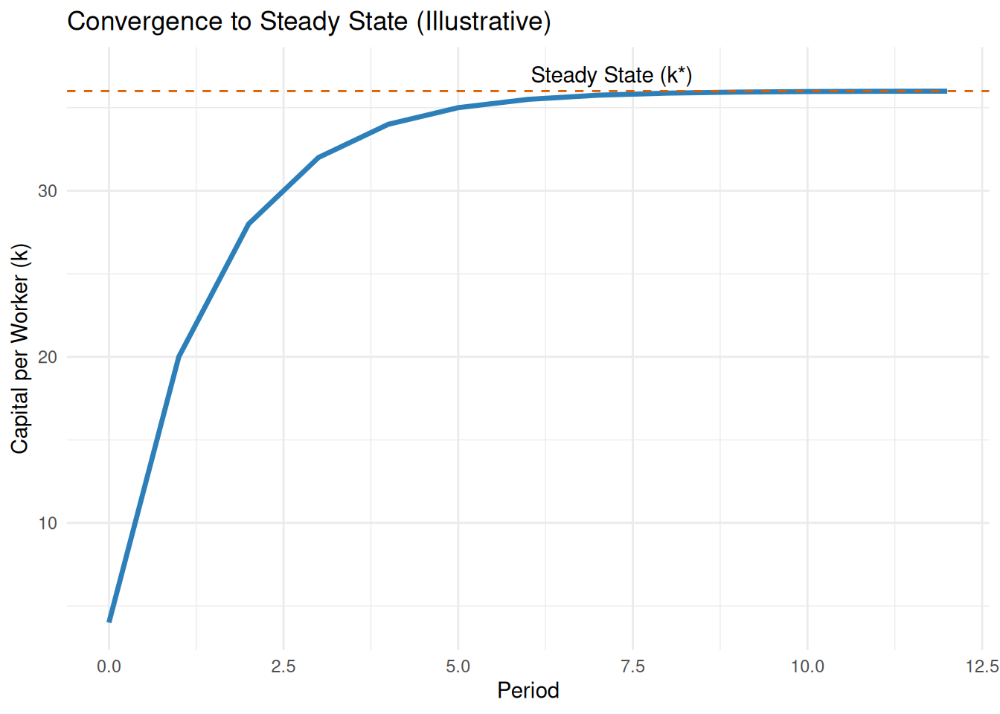
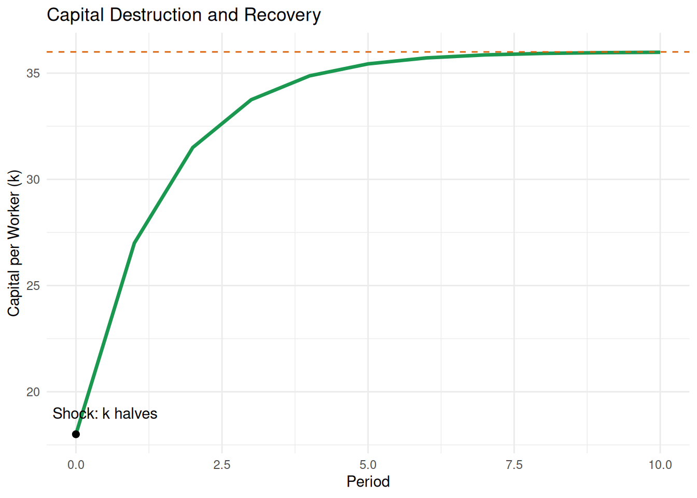

Solow Growth Model Test Bank
Quarto (R) with LaTeX and ggplot2
Overview
Based on Cowen and Tabarrok’s Modern Principles of Macroeconomics (Chapter 8), this test bank contains 20 questions designed for in-class, on-paper assessment. Equations are rendered in LaTeX, and ggplot2 is used to visualize key Solow model graphs. An answer key is provided at the end for easy grading and Gradescope compatibility.
Graphing Questions
1. Draw the Solow Model steady state
Prompt: Draw the Solow Model steady state for the following parameters:
- Production function: ( y = k^{0.5} )
- Saving rate: ( s = 0.3 )
- Depreciation rate: ( = 0.05 )
Label the investment curve, depreciation line, and steady state capital per worker ( k^* ).
2. Effect of an increased saving rate
Prompt: Suppose the saving rate increases from ( s = 0.3 ) to ( s = 0.5 ). Draw the new investment curve and show the new steady state.

3. Effect of an increase in depreciation rate
Prompt: Draw the Solow Model steady state before and after an increase in the depreciation rate from ( = 0.05 ) to ( = 0.10 ), holding ( s = 0.3 ).

4. Convergence to steady state (time path)
Prompt: Sketch the time path of ( k_t ) as the economy converges from below to ( k^* ).

5. Capital destruction shock (war)
Prompt: Show the immediate effect of a one-time shock that halves ( k ) and the path back to ( k^* ).

Definition Questions
- What is the steady state in the Solow Model?
- Define capital depreciation.
- What does diminishing returns to capital mean?
- What is meant by convergence in the Solow Model?
- What is the investment function in the Solow Model?
Synthesis Questions
- Explain why Germany and Japan grew rapidly after WWII using the Solow Model.
- If a country increases its saving rate, what happens to its steady state output per worker? Explain.
- Why do poor countries tend to grow faster than rich countries, according to the Solow Model?
- Describe the trade-off between investment and consumption in the Solow Model.
- Why can’t capital accumulation alone generate sustained long-run growth?
Numerical Questions
- Given ( s = 0.25 ), ( = 0.05 ), and production function ( y = k^{0.5} ), find the steady state value of capital per worker ( k^* ).
- Country A has ( s = 0.2 ), ( = 0.05 ); Country B has ( s = 0.4 ), ( = 0.05 ). Which country has a higher steady state output per worker? Show your work.
- If the depreciation rate increases from 0.05 to 0.1, what happens to the steady state capital per worker, holding s constant at 0.3?
- Suppose an economy starts with ( k = 4 ), but its steady state is ( k^* = 16 ). Will output per worker grow or shrink? Explain.
- If output per worker is currently 10 and the saving rate is 0.3, what is investment per worker?
Answer Key
Graphing Answers
- Steady state at ( k^* = (s/)^2 = (0.3/0.05)^2 = 36 ).
- New steady state at ( k^* = (0.5/0.05)^2 = 100 ).
- With ( s = 0.3 ), increasing ( ) from 0.05 to 0.10 reduces steady state from 36 to 9.
- From below ( k^* ), capital per worker increases over time toward ( k^* ).
- A one-time capital destruction moves ( k ) below ( k^* ); economy converges back upward to ( k^* ).
Definition Answers
- Steady state: investment per worker equals depreciation per worker, so capital per worker is constant.
- Capital depreciation: reduction in capital stock due to wear, tear, and obsolescence, ( k ).
- Diminishing returns: each additional unit of capital increases output by less than the previous one.
- Convergence: ceteris paribus, poorer countries grow faster and catch up to richer ones.
- Investment function: ( i = s y = s k^{0.5} ).
Synthesis Answers
- Post-WWII: low initial capital implied high marginal product of capital; rapid growth during rebuild, slowing as approaching ( k^* ).
- Higher saving rate raises steady state capital and output per worker; growth is transitional, not permanent.
- Poorer countries have higher returns to capital; conditional convergence if fundamentals match.
- Higher saving reduces current consumption but raises future output and potential consumption.
- Diminishing returns imply capital deepening cannot sustain growth; long-run growth requires technological progress.
Numerical Answers
- ( k^* = (s/)^2 = (0.25/0.05)^2 = 25 ).
- A: ( k_A^* = (0.2/0.05)^2 = 16,; y_A^* = 4 ). B: ( k_B^* = (0.4/0.05)^2 = 64,; y_B^* = 8 ). Country B higher.
- With ( s = 0.3 ): ( k^* ) falls from 36 to 9.
- With ( k = 4 < 16 = k^* ), output per worker grows as the economy converges.
- ( i = s y = 0.3 = 3 ).